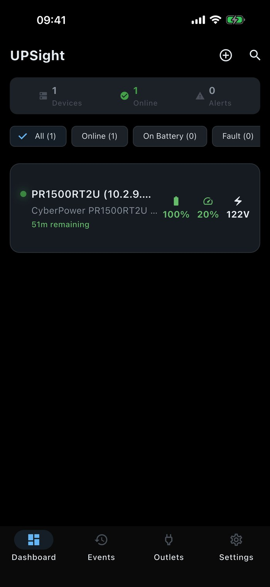

Real-time UPS monitoring over SNMP and NUT - battery, load, runtime, outlets, and smart alerts for CyberPower, Eaton, APC, and any SNMP-capable UPS.

Real screenshots from UPSight - dashboard, device detail, battery gauge, outlets, themes, and more. Tap any to zoom.
Monitor and manage every UPS on your network, from a home lab to a rack of them.
At-a-glance status for all your UPS devices. Battery percentage, load, voltage, and runtime remaining. Live and always current with configurable poll intervals.
Detailed input and output power data. Monitor voltage, frequency, current, wattage, apparent power, and line quality. Everything you need to understand your power environment.
Animated battery gauge with charge percentage, voltage, temperature, and estimated runtime. Run self-tests directly from the app to verify battery readiness.
View and manage individual UPS outlets. See which outlets are active, rename them for easy identification, and toggle controllable outlets on or off.
Configurable notifications for power failures, low battery, device offline, and power restoration events. Set custom thresholds and choose sound + vibration preferences.
Complete log of UPS events: connection changes, status polls, power events, and alarms. Track what happened and when, with timestamped entries for every device.
Dark, light, and system themes. Celsius or Fahrenheit. Adjustable display sizes, customizable bottom navigation, and configurable poll intervals. Make it yours.
Export your device configurations for backup or migration. Import configs on a new device to get up and running instantly, with no re-entering of connection details.
Enter the IP address and pick SNMP (v1/v2c/v3) or NUT. No account, no sign-up.
UPSight talks to your UPS directly on the local network - nothing routed through external servers.
Battery, load, runtime, outlets, and events - with smart notifications when power drops or the battery runs low.
Privacy-first architecture. No accounts, no cloud, no tracking.
All communication happens directly between your device and your UPS over your local network. Nothing is routed through external servers.
SNMP community strings are stored securely on your device. They are never transmitted to MiyaraHub Technologies or any third party.
Firebase Crashlytics for bug reports only. No personal data, no usage tracking, no ads.
A one-time purchase. No subscriptions, no in-app purchases - all future updates included.
UPSight is an independent, third-party application developed and published by MiyaraHub Technologies LLC. It is not created by, affiliated with, endorsed by, sponsored by, or officially connected with CyberPower, Eaton, APC, Schneider Electric, Tripp Lite, Vertiv, or any other manufacturer.
"CyberPower," "Eaton," "APC," "Back-UPS," "Smart-UPS," "Tripp Lite," "Vertiv," "Liebert," and all related product names and logos are trademarks or registered trademarks of their respective owners, used here for identification and compatibility purposes only.
Get UPSight on your platform of choice - a one-time $4.99 purchase, no subscription.